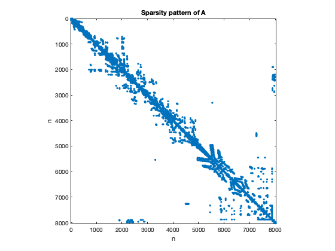
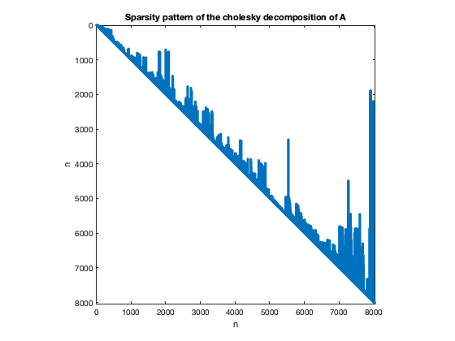
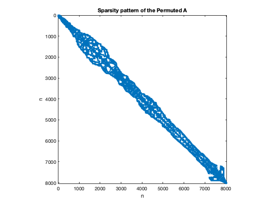
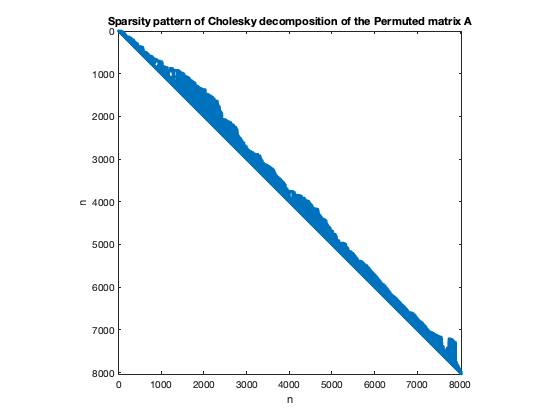

close all;
clear all;
fprintf('No.3(a)\n\n');
load bcsstk38;
A = Problem.A;
fprintf('Make a spy plot of the matrix A showing its sparsity pattern \n\n');
figure(1)
spy(A)
title('Sparsity pattern of A');
ylabel('n');xlabel('n');
fprintf('Compute the sparsity ratio of A\n\n');
sparsity_ratio = 1 - nnz(A)/numel(A);
fprintf('The sparsity ratio is %f \n\n',sparsity_ratio);
fprintf('No.3(b)\n\n');
R = chol(A);
figure(2)
spy(R)
title('Sparsity pattern of the cholesky decomposition of A');
ylabel('n');xlabel('n');
fillin = nnz(R)/nnz(A);
fprintf('The fill-in is %f \n\n',fillin);
fprintf('No.3(c)\n\n');
s = symrcm(A); S=A(s,s);
R2 = chol(S);
fillin2 = nnz(R2)/nnz(S);
fprintf('The fill-in of the permuted A is %f \n\n',fillin2);
fprintf('The fill-in for the permuted matrix is small than that for the original A.\n\n')
figure(3)
spy(S)
title('Sparsity pattern of the Permuted A');
ylabel('n');xlabel('n');
figure(4)
spy(R2)
title('Sparsity pattern of Cholesky decomposition of the Permuted matrix A');
ylabel('n');xlabel('n');
No.3(a)
Make a spy plot of the matrix A showing its sparsity pattern
Compute the sparsity ratio of A
The sparsity ratio is 0.994490
No.3(b)
The fill-in is 4.738485
No.3(c)
The fill-in of the permuted A is 4.038452
The fill-in for the permuted matrix is small than that for the original A.
   